Kirito also known as the black swordsman because he would always wear all black with a black sword called the elucidator. He was one of 10,000 players to get trapped in the world of Sword Art Online and was a member of the assault team dedicated to clearing the game and freeing all the players.
Asuna also known as lightning flash due to her immense speed was traped in Sword Art Online with Kirito. She becomes the second in command of the knights of the blood oath - the strongest guild within the game.
Heathcliff is the commander of the knights of the blood oath guild within Sword Art Online. He is also the final boss on floor 100 of Aincrad. Heathcliff uses a full length shield and a sword. He is also known as Akihiko Kayaba, the creator of Sword Art Online.
Bell Cranel was the lone member of the Hestia Familia in DanMachi or Is It Wrong To Pick Up Girls In A Dungeon. He is completely devoted to goddess Hestia despite numerous advances being made towards him from other goddesses. He single-handedly leads to the Hestia Familia growing.
Chris is a thief girl within the city of Axel in Konosuba. She is friendly with Darkness, the useless crusader and teaches Kazuma his first set of skills - Steal, Lurk and Enemy Detection. She is the human form of the goddess Eris when she wants to check in on the own of Axel or when she is just bored.
Her name is Megumin, the foremost mage in all the crimson demons and wielder of explosion magic. She refused to learn any spells until she had learnt explosion magic and since learning explosion magic she only wants to learn spells to buff her explosion. Due to the massive amount of magical power needed to cast explosion she is only ever able to cast it once per day and she is unable to move afterwards. As a result of this she keeps getting kicked out of parties until she joins up with Kazuma and Aqua.
The Seven Deadly Sins' goat sin of lust, Gowther is nothing more than a mere doll, created by Gowther of Selflessness of the ten commandments of the demon race. Gowther has the ability to tamper with the memories and feelings of people which he does numerous times in his quest to develop a heart.
Apdnarg Otum is a Kaiba Corp Grand Championship Duelist using a mask covering his face thereby hiding his true identity. He loses out to his former student Joey Wheeler.
Atem was a former pharoh of Egypt until he sealed himself and Zorc inside the Millienium Puzzle. Solomon's grandson Yugi Muto solved the Millennium Puzzle, causing Atem, now a disembodied, amnesiac spirit, to reside in Yugi's body, eventually taking on the identity of “Yami Yugi”. As Yami, he aided Yugi many times over the course of his adventures, with Yugi attempting to return the favor by finding the secret of Atem's past.
In the Yu-Gi-Oh! Duel Monsters anime, Mokuba is eternally devoted to his brother Seto Kaiba and is constantly by his side. He is more naive and good-natured, and will do whatever his brother tells him to. Indeed, Mokuba is perhaps the source of his brother's more human and positive traits, and Mokuba has acknowledged that to everyone else Kaiba can seem like an unpleasant person to be around but Mokuba recognizes the good in his brother and looks past Kaiba's flaws.
Footballers
Federico Chiesa Cavaliere OMRI is an Italian professional footballer who plays as a winger or forward for Serie A club Juventus and the Italy national team. He is the son of former footballer Enrico Chiesa.
Lamine Yamal Nasraoui Ebana is a Spanish professional footballer from Catalonia who plays as a right winger for La Liga club Barcelona and the Spain national team. He is regarded as one of the best young talents in the world.
Ellis Simms is an English professional footballer who plays as a striker for EFL Championship club Coventry City.
Jaden Richard Philogene-Bidace is an English professional footballer who plays as a winger for EFL Championship club Hull City. He is a product of the Aston Villa Academy and has represented England at youth level, he is currently a member of the under-21 squad.
John Fashanu is an English television presenter and former professional footballer. As a footballer he was a centre-forward from 1978 until 1995, most notably in an eight-year spell at Wimbledon in which he won the FA Cup in 1988 and scored over 100 goals in all competitions.
Andre Gomes is a portuguese midfielder who played for SL Benfica, Barcelona and Everton. Andre signed fr Everton initially on loan before they made his loan permanent for a whopping £22m. He was also a part of the Portuguese European Championship winning squad and has won various trophies all prior to signing for the Merseyside based club in 2019 on a 5-year contract which wasn't renewed making him a free agent on July 1st 2024. He suffered a horrific injury playing for Everton against Tottenham in the November of 2019 a mere few months into his permanent Everton career.
Samuel Eto'o is a Cameroonian football administrator and former player who is the current president of the Cameroonian Football Federation. He won the African Player of the Year a record four times: in 2003, 2004, 2005, and 2010. A precocious talent, Eto'o moved to Real Madrid as a 16 year old.
Alan James Ball MBE was an English professional football player and manager. He was the youngest member of England's 1966 World Cup winning team and played as a midfielder for various clubs, scoring more than 180 league goals in a career spanning 22 years.
Ronald Koeman is a Dutch professional football manager and former player who is the manager of the Netherlands national team. Koeman scored over 250 goals whilst playing in defence for the majority of his career.
David William Moyes is a Scottish professional football manager and former player who was most recently the manager of Premier League club West Ham United. He was previously the manager of Preston North End, Everton, Manchester United, Real Sociedad, and Sunderland.
ADULT ANIMATION CHARACTERS
Richard Daniel "Rick" Sanchez of Dimension C-137, commonly referred to as Rick C-137, is the titular main protagonist of Rick and Morty. He is a megagenius[16] scientist whose alcoholism and reckless, nihilistic behavior are sources of concern for "his daughter's" family, as well as the safety of her son, Morty.
Randy Marsh is the son of Marvin and Grandma Marsh, the half-brother of Jimbo Kern, the husband of Sharon, and the father of Stan and Shelly. He first appeared in the Season One episode, "Volcano", and is voiced by Trey Parker.
Mortimer "Evil Morty" Smith of Dimension 79 is a recurring fictional character in the American animated television series Rick and Morty and resulting franchise.
Sterling Malory Archer, almost exclusively referred to by his surname Archer, is a fictional character and the titular protagonist of the American adult animated sitcom Archer. Created by Adam Reed, he is voiced by H. Jon Benjamin and debuted in the series' pilot episode, "Mole Hunt", on September 17, 2009.
ManBearPig is a demon from Hell that thrives on temptation, often making deals that involve causing immense carnage toward the next generation when the debt is due. Though often appearing feral, he is sentient and intelligent, sometimes wearing clothing or having specific goals.
Lana Anthony Kane is a fictional character of the American adult animated sitcom Archer. Created by Adam Reed, she is voiced by Aisha Tyler and debuted in the series' pilot episode, "Mole Hunt", on September 17, 2009.
Cyril Figgis is a comptroller and recently promoted field agent in the TV show Archer. He is passive, bookish, and is frequently bullied by Archer, largely due to his relationship with Lana Kane. Due to Cyril's sexual addiction, he cheated on Lana several times and is no longer with her because of it.
Description. Mr. Poopybutthole is a very good friend to the Smith Family, from another dimension (where he is a planet wide superstar) who has taken refuge with the Smiths so he can live a normal life, he is described as a long-time friend of the family.
Eric Theodore Cartman, commonly referred to mononymously by his last name, is a fictional character in the adult animated sitcom South Park, created by Trey Parker and Matt Stone. He is voiced by Parker, and is one of the series' four main characters, alongside Stan Marsh, Kyle Broflovski, and Kenny McCormick.
Korvo is the main protagonist of the Hulu animated series Solar Opposites. He is a leader of the main aliens and computer expert. He, along with the other aliens (Terry, Yumyulack, and Jesse) with the babylike alien as known as the Pupa leave their planet after the asteroid hits it and destroy.
Guess the show
Anime
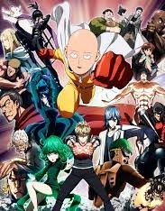
Saitama started out being a hero just for fun. After three years of “special” training, he became so powerful that he can defeat opponents with a single punch. Now, alongside
Genos, his faithful cyborg disciple, Saitama is ready to begin his official duties as a professional hero working with the Hero Association. However, the frequency of monster appearances is surging and it increasingly appears as if the Great Seer Madame Shibabawa's prediction about the Earth's doom is coming true. In the midst of this crisis, the “hero hunter” Garou makes his own appearance.
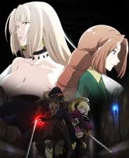
Rentt Faina has hunted monsters for the last 10 years. Sadly, he's not great at his job, stuck hunting slimes and goblins for a few coins each day. His luck turns when he finds an undiscovered path. At the path's end, he meets his demise in the maw of a legendary dragon. But, he wakes up as an undead bag of bones! He sets out to achieve Existential Evolution and rejoin the land of the living.
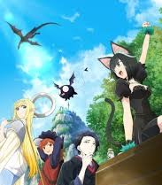
Pulled into an otherworldly adventure with cute sidekicks and superpowers, you’d think Osamu hit the jackpot. Nope! From a time before pixels, the early 20th-century gloomy author just wants to find a quiet place to meet his maker, not to rack up XP. Sadly, his poetic demise is constantly thwarted by inconvenient heroics. Dive into the hilariously tragic life of the most reluctant hero!
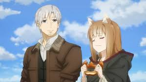
Lawrence is a traveling merchant selling various goods from a horse-drawn cart. One day, he arrives at a village and meets a beautiful girl with the ears and tail of an animal! Her name is Holo the Wisewolf and she brings bountiful harvests. She wishes to return to her homeland, and Lawrence offers to take her. Now, the once-lonely merchant and the once-lonely wisewolf begin their journey north.
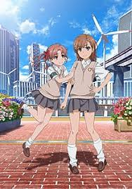
Misaka's electro-manipulation abilities—and delightfully destructive Railgun projectile move—make her a rock star in Academy City. The techno-metropolis is packed with supernaturally powered students known as espers, including Misaka's flirty friend and roommate, Kuroko. In this city full of super-powered gangs, mad scientists, and monsters—there's no shortage of action!
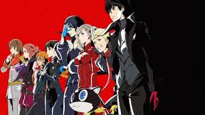
Ren Amamiya is about to enter his second year after transferring to Shujin Academy in Tokyo. Following a particular incident, his Persona awakens, and together with his friends they form the “Phantom Thieves of Hearts” to reform hearts of corrupt adults by stealing the source of their distorted desires. Meanwhile, bizarre and inexplicable crimes have been popping up one after another… Living an ordinary high school life in Tokyo during the day, the group maneuvers the metropolitan city as Phantom Thieves after hours. Let the curtain rise for this grand, picaresque story!
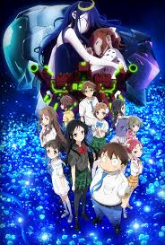
Haruyuki is an overweight kid and at bottom of food chain at his middle school. Within sci-fi setting of real world he often seeks refuge in a virtual one.
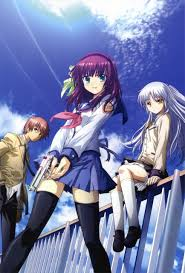
Otonashi is a young boy living in the afterlife with no memories of his life before his death. He joins a school organization called the SSS whose mission is to fight against God.
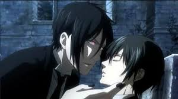
Ciel Phantomhive is the most powerful boy in all of England, but he bears the scars of unspeakable suffering. Forced to watch as his beloved parents were brutally murdered, Ciel was subsequently abducted and violently tortured. Desperate to end his suffering, the boy traded his own soul for a chance at vengeance, casting his lot with the one person on whom he could depend: Sebastian, a demon Butler summoned from the very pits of hell. Together, they'll prowl the darkest alleys of London on a mission to snuff out those who would do evil.
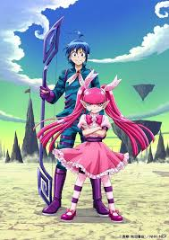
Suzuki Iruma (Iruma Suzuki), human, 14, one day finds himself taken against his will into the world of demons. To add to his predicament, his doting owner and self-appointed "Grandpa" is the chair-demon at his new school. In order to survive, Iruma must deal with a haughty student who challenges him to a duel, a girl with adjustment issues, and so many more scary beings! Can this ultimate pacifist dodge the slings and arrows that are flung his way? As he struggles frantically, Iruma's innate kindness begins to win over enemies.
Live Action
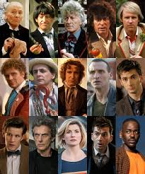
The further adventures in time and space of the alien adventurer known as the Doctor and his companions from planet Earth.
Follows the inner workings of the New York field office criminal division of the Federal Bureau of Investigation (FBI), as they fight to keep New York City and the country safe.
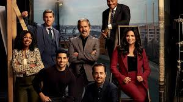
Follows the Major Case Response Team (MCRT) from the Naval Criminal Investigative Service (NCIS), as they get to the bottom of criminal cases connected to Navy and Marine Corps personnel.
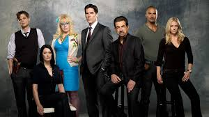
A group of criminal profilers who work for the FBI as members of its Behavioral Analysis Unit (BAU) using behavioral analysis and profiling to help investigate crimes and find the suspect known as the unsub (unknown subject).
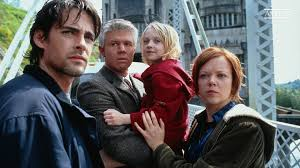
The lives of three families intersect over five decades, starting with the Roswell crash, as they experience abductions, secret government investigations, and the mystery of alien encounters.
In 1960s America, a young couple struggle to expose the truth about a hidden alien invasion, while a secret government organization follows its own agenda in dealing with the threat.
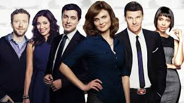
F.B.I. Special Agent Seeley Booth teams up with the Jeffersonian's top anthropologist, Dr. Temperance Brennan, to investigate cases where all that's left of the victims are their bones.
Two teenage boys with clashing personalities - one is a slick musician, the other a clumsy nerd - must navigate high school and family life together after becoming step-brothers.
Bumbling, childlike Mr. Bean has trouble completing the simplest of day-to-day tasks, but his perseverance and resourcefulness frequently allow him to find ingenious ways around problems.
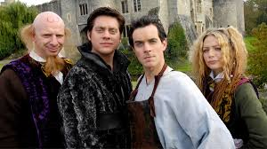
Two brothers embark on a very silly journey to find a cure to the disease that is infecting Bottomworld.